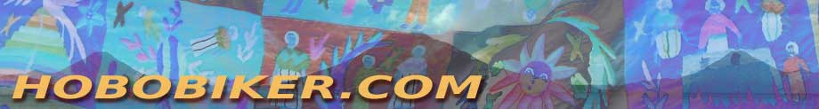
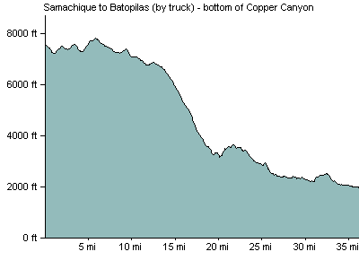

Menu
Home
The Americas
Canada
Blog (In Order)
Route and Triplog
Wonderful People
USA West Coast
Blog (In Order)
Route and Triplog
Wonderful People
Mexico
Mexico section blog (in order)
Route and Triplog
Wonderful People
Central America
Central America Blog
Route and Triplog
South America
South America Blog (in order)
Colombia
Ecuador
Peru
Bolivia
Argentina
Route and Triplog
Earlier Trips
Mexico (2003)
Blog
Thanks!
Trip Log
Great Divide (2003)
Blog (In Order)
Wonderful People
Trip Log
Northwest (2004)
Route
Thanks
Trip Log
New England (2005)
Photos
Route
Thanks
Trip Log
FAQ
Gear
Route Maps
Canada
USA
Mexico
Central America
South America
Colombia
Ecuador
Peru
Bolivia
Argentina/Chile
Topics
Podcasts
Tips for Travelers
Agua Para La Vida
Microfinance
Kiva.org
Friendship Bridge
Maps
Other Cyclists
Route Reports
Home
‹ Humirá to Samachique
Up
Samachique to El Cerrito ›
March 11, 2007: Samachique to Batopilas, Chihuhua
Explore in Google Earth
miles/0 kilometers
Elevation Gain: feet/0 meters
Where we stayed: hotel
Download GPX file
Download KML file
Elevation Profile

‹ Humirá to Samachique
Up
Samachique to El Cerrito ›